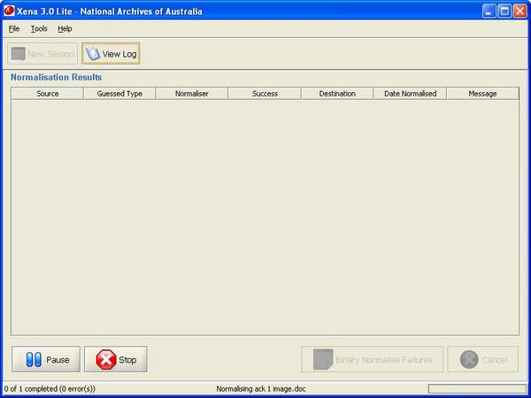
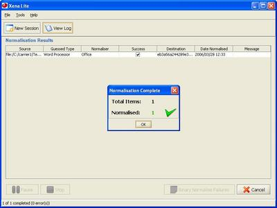

To normalise a single file, click Add Files.

Use the file browser to select the file to be normalised.

Click Normalise
During processing, the Pause and Stop buttons become available. Please note that rather than halt processing immediately, either of these will interrupt processing once the current file has been processed. If the current file is large or complex, there may be some delay before Pause or Stop is effective.
Once processing has completed, the results are presented. Click OK.
The Cancel button may be used after processing to delete the resulting xena file(s) and start again. This might be done if the wrong file was accidentally normalised. The New Session button may be used after processing to continue processing files without altering any processing results.
If a file is malformed or is of a type unkown to Xena Lite, the normalising process may fail. Failures are indicated in the results table with a brief explanation of the cause. If any failures occur, the Binary Normalise Failures button becomes active and may be used to preserve failed files as text with embedded metadata.